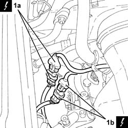
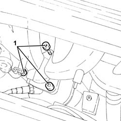
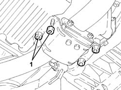
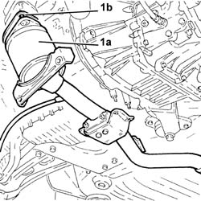
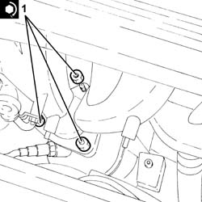
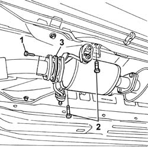
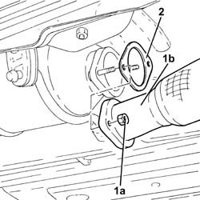
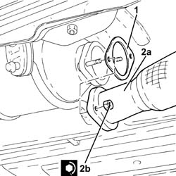

1076B34 front catalytic converter attachment seal - replace
- Path
- Procedures > 10 ENGINE > 1076 EXHAUST PIPES AND SILENCERS > 1076B exhaust pipes and silencers > 1076B34 front catalytic converter attachment seal - replace
- Kind
- repair procedure (removal / refitting; the operation number is the code)
- Applies to
- all engines; all production periods
- Interactive page
- https://sloeber94.github.io/elrnDB-a147/en/#/3024867
Applies to: engines: 1.6 TS; all production periods; only with equipment: 103 CV
 Removing
Removing
 Refitting
RefittingPosition the vehicle on the ramp.
Ensure that the ignition key is in the OFF postition, then disconnect the battery negative terminal.
 | Name | Connector |
|---|---|---|
- | Battery |
1. Disconnect the electrical connections (1a) and (1b) for the Lambda sensors.
| Name | Connector |
|---|---|---|
1a | Lambda sensor on pre-catalyzer |
| Name | Connector |
|---|---|---|
1b | Lambda sensor downstream of post-catalyzer |

Applies to: engines: 1.6 TS; all production periods; only with equipment: 103 CV
Proceed with the removal 1072C44 exhaust manifold heat shield on bulkhead - r+r .
1. Undo the nuts fixing the catalytic converter, manifold side.

Applies to: engines: 1.6 TS; all production periods; only with equipment: 103 CV
1. Undo the nuts securing the catalytic converter to the engine sump.

Applies to: engines: 1.6 TS; all production periods; only with equipment: 103 CV
1. Lower the catalytic converter (1a), as necssary, and remove the gasket (1b).

Applies to: engines: 1.6 TS; all production periods; only with equipment: 103 CV
Refitting
RemovingPlace a new gasket in the housing.
Place the catalytic converter back in its housing.
Tighten the nuts fixing the catalyti converter mounting, crankcase sump side.
1. Tighten the nuts fixing the catalytic converter, manifold side.
 | Fastening | Component | Ø | Value (daNm) |
|---|---|---|---|---|
1 | Nut | CATALYTIC CONVERTER (ONE) | M10 | (Manifold side) 4.1 ÷ 5.0 |

Applies to: engines: 1.6 TS; all production periods; only with equipment: 103 CV
Proceed with the refitting 1072C44 exhaust manifold heat shield on bulkhead - r+r .
Connect the Lambda probe electrical connections.
Connect the battery terminal (-).
Remove the car from the ramp.
Applies to: engines: 1.6 TS; all production periods; only with equipment: 120 CV
Removing
RefittingProceed with the removal 1080B62 catalytic converter - r + r .
Applies to: engines: 1.6 TS; all production periods; only with equipment: 120 CV
Refitting
RemovingProceed with the refitting 1080B62 catalytic converter - r + r .
Applies to: engines: 2.0 TS; all production periods
Removing
RefittingProceed with the removal 1080B62 catalytic converter - r + r .
Applies to: engines: 2.0 TS; all production periods
Refitting
RemovingProceed with the refitting 1080B62 catalytic converter - r + r .
Applies to: engines: 3.2 V6; all production periods
Removing
RefittingProceed with removal 7055B54 under-engine guard - r r .
Proceed with removal 1080B65 catalytic converter assembly r r .
Applies to: engines: 3.2 V6; all production periods
Refitting
RemovingProceed with refitting 1080B65 catalytic converter assembly r r .
Proceed with refitting 7055B54 under-engine guard - r r .
Applies to: engines: 1.9 JTD 8V; all production periods
Removing
RefittingPlace the car on a ramp.
1. Undo the bolts securing the pipe to the catalytic converter.
2. Undo the bolts securing the mounting brackets to the body.
3. Remove the gasket from its seat.

Applies to: engines: 1.9 JTD 8V; all production periods
Refitting
RemovingFit the gasket into its seat on the catalytic converter.
Secure the pin to its rubber block.
Tighten the bolts securing the exhaust pipe to the catalytic converter.
| Fastening | Component | Ø | Value (daNm) |
|---|---|---|---|---|
- | Bolt | EXHAUST PIPE TO ENGINE | M8 | (catalytic converter) 3 |
Remove the vehicle from the ramp.
Applies to: engines: 1.9 JTD 16V; all production periods
Removing
RefittingPosition the vehicle on the ramp.
1. Undo the nuts (1a) and disconnect the front section of the exhaust pipe (1b) from the catalytic converter.
2. Remove the front attachment gasket for the catalytic converter.

Applies to: engines: 1.9 JTD 16V; all production periods
Refitting
Removing1. Place the front catalytic converter attachment gasket in the housing.
2. Place the front section of the exhaust pipe (2a) back in its housing and secure by tightening the nuts (2b) to the recommended torque.
| Fastening | Component | Ø | Value (daNm) |
|---|---|---|---|---|
2b | Nut | PRE-CAT CONVERTOR/CAT CONVERTOR PIPE | M8 | (Catalytic converter side) 2.3 ÷ 2.8 |

Applies to: engines: 1.9 JTD 16V; all production periods
Remove the car from the ramps.
Topics linked from this page (7)
- 1072C44 exhaust manifold heat shield on bulkhead - r+r
- 1080B62 catalytic converter - r + r
- 1080B65 catalytic converter assembly r r
- 7055B54 under-engine guard - r r
- A1B Battery ( Connectors )
- K15 Lambda sensor on pre-catalyzer
- K17 Lambda sensor downstream of post-catalyzer